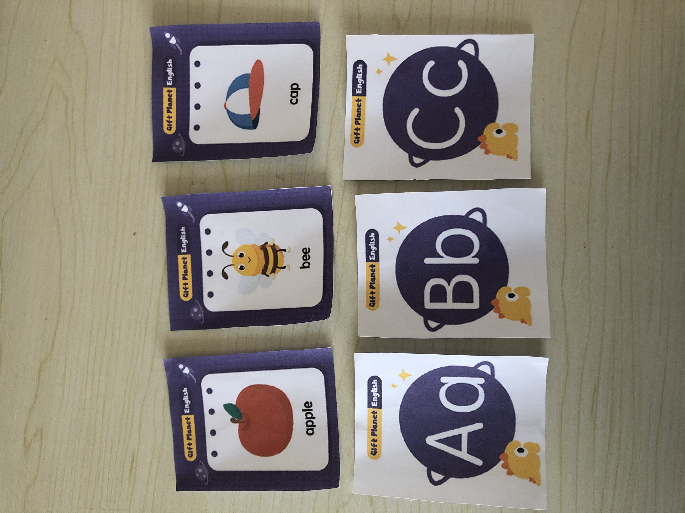
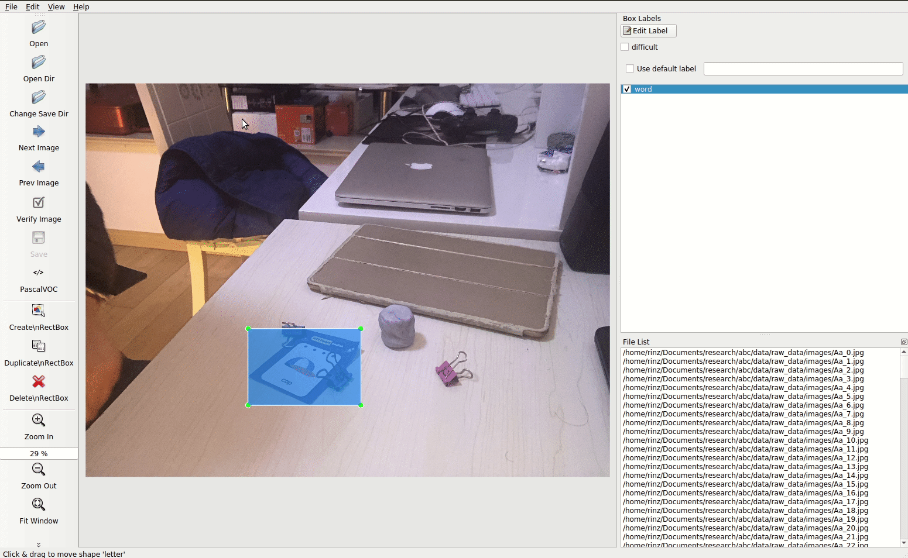
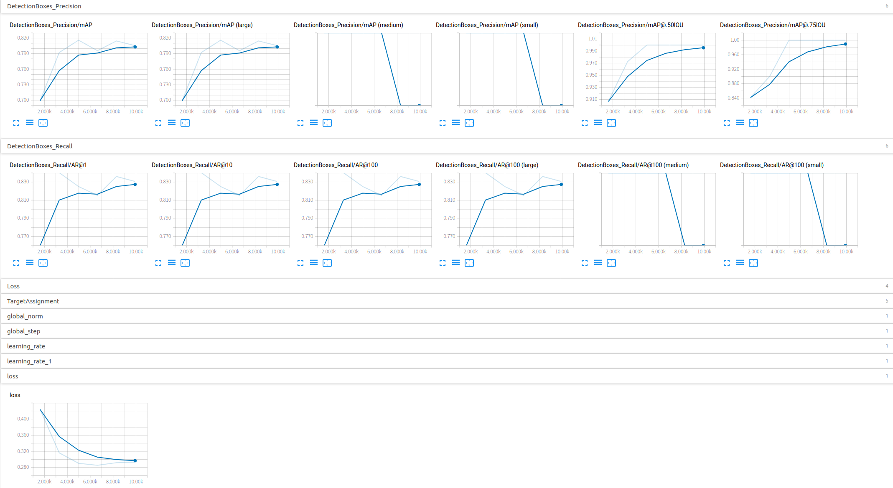
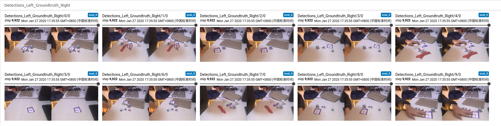
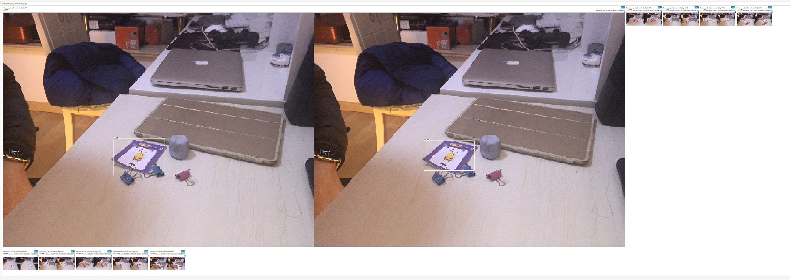
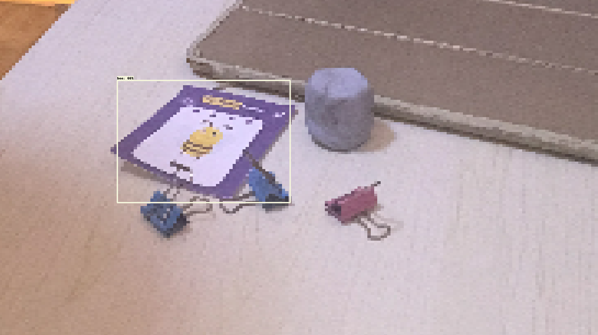

<!DOCTYPE html>
<html lang="en">

<head>
  <meta charset="utf-8" />
    
  <meta name="viewport" content="width=device-width, initial-scale=1, maximum-scale=1" />
  <title>
    使用TensorFlow Object Detection API(4) |  Rinz&#39;s Blog
  </title>
  
  <link rel="shortcut icon" href="/logo.png" />
  
  
<link rel="stylesheet" href="/css/style.css">

  
<script src="/js/pace.min.js"></script>


  

  

<meta name="generator" content="Hexo 4.2.0"></head>

</html>

<body>
  <div id="app">
    <main class="content">
      <section class="outer">
  <article id="post-text-4" class="article article-type-post" itemscope
  itemprop="blogPost" data-scroll-reveal>

  <div class="article-inner">
    
    <header class="article-header">
       
<h1 class="article-title sea-center" style="border-left:0" itemprop="name">
  使用TensorFlow Object Detection API(4)
</h1>
  

    </header>
    

    
    <div class="article-meta">
      <a href="/2020/02/02/text-4/" class="article-date">
  <time datetime="2020-02-02T04:34:05.000Z" itemprop="datePublished">2020-02-02</time>
</a>
      
    </div>
    

    
    
    <div class="tocbot"></div>


    

    <div class="article-entry" itemprop="articleBody">
      


      

      
      <h2 id="目标"><a href="#目标" class="headerlink" title="目标"></a>目标</h2><p>使用多GPU，在SSDLite with MobileNet-V3-Small backbone模型上训练自定义数据集</p>
<a id="more"></a>

<h2 id="环境"><a href="#环境" class="headerlink" title="环境"></a>环境</h2><p>Ubuntu 18.04.2 下使用docker镜像：<br>tensorflow/tensorflow   1.15.0-gpu-py3<br>nvidia/cuda             10.1</p>
<h2 id="数据集"><a href="#数据集" class="headerlink" title="数据集"></a>数据集</h2><h3 id="原始照片采集与标注"><a href="#原始照片采集与标注" class="headerlink" title="原始照片采集与标注"></a>原始照片采集与标注</h3><p>本文尝试对6张幼儿英语学习卡牌进行识别<br>卡牌如下<br><br>将照片以Class_index格式命名并放入<code>images</code>文件夹<br>分别对每张卡牌拍摄不同场景下的照片，并使用imageLab进行标注，标注为PascalVol格式。标注保存在<code>annotations</code>下<code>xmls</code>文件夹<br><br>标注时的类别不是很重要，后面制作tfrecord时候用的是文件名来做类别的</p>
<blockquote>
<p>本文采集了如下数据：<br>Aa卡牌23张<br>apple卡牌35张<br>Be卡牌29张<br>bee卡牌35张<br>Cc卡牌15张<br>cap卡牌38张</p>
</blockquote>
<h3 id="制作tfrecord"><a href="#制作tfrecord" class="headerlink" title="制作tfrecord"></a>制作tfrecord</h3><p>制作<code>label_map.bptxt</code>文件，标明class</p>
<figure class="highlight python"><table><tr><td class="gutter"><pre><span class="line">1</span><br><span class="line">2</span><br><span class="line">3</span><br><span class="line">4</span><br><span class="line">5</span><br><span class="line">6</span><br><span class="line">7</span><br><span class="line">8</span><br><span class="line">9</span><br><span class="line">10</span><br><span class="line">11</span><br><span class="line">12</span><br><span class="line">13</span><br><span class="line">14</span><br><span class="line">15</span><br><span class="line">16</span><br><span class="line">17</span><br><span class="line">18</span><br><span class="line">19</span><br><span class="line">20</span><br><span class="line">21</span><br><span class="line">22</span><br><span class="line">23</span><br><span class="line">24</span><br><span class="line">25</span><br><span class="line">26</span><br><span class="line">27</span><br><span class="line">28</span><br><span class="line">29</span><br></pre></td><td class="code"><pre><span class="line">item &#123;</span><br><span class="line">  id: <span class="number">1</span></span><br><span class="line">  name: <span class="string">'Aa'</span></span><br><span class="line">&#125;</span><br><span class="line"></span><br><span class="line">item &#123;</span><br><span class="line">  id: <span class="number">2</span></span><br><span class="line">  name: <span class="string">'Bb'</span></span><br><span class="line">&#125;</span><br><span class="line"></span><br><span class="line">item &#123;</span><br><span class="line">  id: <span class="number">3</span></span><br><span class="line">  name: <span class="string">'Cc'</span></span><br><span class="line">&#125;</span><br><span class="line"></span><br><span class="line">item &#123;</span><br><span class="line">  id: <span class="number">4</span></span><br><span class="line">  name: <span class="string">'apple'</span></span><br><span class="line">&#125;</span><br><span class="line"></span><br><span class="line">item &#123;</span><br><span class="line">  id: <span class="number">5</span></span><br><span class="line">  name: <span class="string">'bee'</span></span><br><span class="line">&#125;</span><br><span class="line"></span><br><span class="line">item &#123;</span><br><span class="line">  id: <span class="number">6</span></span><br><span class="line">  name: <span class="string">'cap'</span></span><br><span class="line">&#125;</span><br></pre></td></tr></table></figure>

<p>制作<code>trainval.txt</code>，写入所有图片文件名，放在<code>annotations</code>文件夹中</p>
<figure class="highlight plain"><table><tr><td class="gutter"><pre><span class="line">1</span><br><span class="line">2</span><br><span class="line">3</span><br><span class="line">4</span><br><span class="line">5</span><br><span class="line">6</span><br><span class="line">7</span><br><span class="line">8</span><br><span class="line">9</span><br><span class="line">10</span><br><span class="line">11</span><br><span class="line">12</span><br><span class="line">13</span><br><span class="line">14</span><br><span class="line">15</span><br><span class="line">16</span><br><span class="line">17</span><br><span class="line">18</span><br><span class="line">19</span><br><span class="line">20</span><br><span class="line">21</span><br><span class="line">22</span><br><span class="line">23</span><br><span class="line">24</span><br></pre></td><td class="code"><pre><span class="line">apple_25</span><br><span class="line">Bb_10</span><br><span class="line">Bb_11</span><br><span class="line">Bb_22</span><br><span class="line">bee_29</span><br><span class="line">Bb_3</span><br><span class="line">apple_30</span><br><span class="line">cap_1</span><br><span class="line">bee_10</span><br><span class="line">apple_10</span><br><span class="line">cap_37</span><br><span class="line">apple_17</span><br><span class="line">bee_5</span><br><span class="line">apple_26</span><br><span class="line">Aa_15</span><br><span class="line">cap_2</span><br><span class="line">cap_0</span><br><span class="line">apple_32</span><br><span class="line">apple_34</span><br><span class="line">Bb_6</span><br><span class="line">cap_27</span><br><span class="line">cap_30</span><br><span class="line">bee_4</span><br><span class="line">...等全部文件名</span><br></pre></td></tr></table></figure>

<p>在<code>object_detection/dataset_tools/</code>下创建<code>create_abc_tf_record.py</code></p>
<figure class="highlight python"><table><tr><td class="gutter"><pre><span class="line">1</span><br><span class="line">2</span><br><span class="line">3</span><br><span class="line">4</span><br><span class="line">5</span><br><span class="line">6</span><br><span class="line">7</span><br><span class="line">8</span><br><span class="line">9</span><br><span class="line">10</span><br><span class="line">11</span><br><span class="line">12</span><br><span class="line">13</span><br><span class="line">14</span><br><span class="line">15</span><br><span class="line">16</span><br><span class="line">17</span><br><span class="line">18</span><br><span class="line">19</span><br><span class="line">20</span><br><span class="line">21</span><br><span class="line">22</span><br><span class="line">23</span><br><span class="line">24</span><br><span class="line">25</span><br><span class="line">26</span><br><span class="line">27</span><br><span class="line">28</span><br><span class="line">29</span><br><span class="line">30</span><br><span class="line">31</span><br><span class="line">32</span><br><span class="line">33</span><br><span class="line">34</span><br><span class="line">35</span><br><span class="line">36</span><br><span class="line">37</span><br><span class="line">38</span><br><span class="line">39</span><br><span class="line">40</span><br><span class="line">41</span><br><span class="line">42</span><br><span class="line">43</span><br><span class="line">44</span><br><span class="line">45</span><br><span class="line">46</span><br><span class="line">47</span><br><span class="line">48</span><br><span class="line">49</span><br><span class="line">50</span><br><span class="line">51</span><br><span class="line">52</span><br><span class="line">53</span><br><span class="line">54</span><br><span class="line">55</span><br><span class="line">56</span><br><span class="line">57</span><br><span class="line">58</span><br><span class="line">59</span><br><span class="line">60</span><br><span class="line">61</span><br><span class="line">62</span><br><span class="line">63</span><br><span class="line">64</span><br><span class="line">65</span><br><span class="line">66</span><br><span class="line">67</span><br><span class="line">68</span><br><span class="line">69</span><br><span class="line">70</span><br><span class="line">71</span><br><span class="line">72</span><br><span class="line">73</span><br><span class="line">74</span><br><span class="line">75</span><br><span class="line">76</span><br><span class="line">77</span><br><span class="line">78</span><br><span class="line">79</span><br><span class="line">80</span><br><span class="line">81</span><br><span class="line">82</span><br><span class="line">83</span><br><span class="line">84</span><br><span class="line">85</span><br><span class="line">86</span><br><span class="line">87</span><br><span class="line">88</span><br><span class="line">89</span><br><span class="line">90</span><br><span class="line">91</span><br><span class="line">92</span><br><span class="line">93</span><br><span class="line">94</span><br><span class="line">95</span><br><span class="line">96</span><br><span class="line">97</span><br><span class="line">98</span><br><span class="line">99</span><br><span class="line">100</span><br><span class="line">101</span><br><span class="line">102</span><br><span class="line">103</span><br><span class="line">104</span><br><span class="line">105</span><br><span class="line">106</span><br><span class="line">107</span><br><span class="line">108</span><br><span class="line">109</span><br><span class="line">110</span><br><span class="line">111</span><br><span class="line">112</span><br><span class="line">113</span><br><span class="line">114</span><br><span class="line">115</span><br><span class="line">116</span><br><span class="line">117</span><br><span class="line">118</span><br><span class="line">119</span><br><span class="line">120</span><br><span class="line">121</span><br><span class="line">122</span><br><span class="line">123</span><br><span class="line">124</span><br><span class="line">125</span><br><span class="line">126</span><br><span class="line">127</span><br><span class="line">128</span><br><span class="line">129</span><br><span class="line">130</span><br><span class="line">131</span><br><span class="line">132</span><br><span class="line">133</span><br><span class="line">134</span><br><span class="line">135</span><br><span class="line">136</span><br><span class="line">137</span><br><span class="line">138</span><br><span class="line">139</span><br><span class="line">140</span><br><span class="line">141</span><br><span class="line">142</span><br><span class="line">143</span><br><span class="line">144</span><br><span class="line">145</span><br><span class="line">146</span><br><span class="line">147</span><br><span class="line">148</span><br><span class="line">149</span><br><span class="line">150</span><br><span class="line">151</span><br><span class="line">152</span><br><span class="line">153</span><br><span class="line">154</span><br><span class="line">155</span><br><span class="line">156</span><br><span class="line">157</span><br><span class="line">158</span><br><span class="line">159</span><br><span class="line">160</span><br><span class="line">161</span><br><span class="line">162</span><br><span class="line">163</span><br><span class="line">164</span><br><span class="line">165</span><br><span class="line">166</span><br><span class="line">167</span><br><span class="line">168</span><br><span class="line">169</span><br><span class="line">170</span><br><span class="line">171</span><br><span class="line">172</span><br><span class="line">173</span><br><span class="line">174</span><br><span class="line">175</span><br><span class="line">176</span><br><span class="line">177</span><br><span class="line">178</span><br><span class="line">179</span><br><span class="line">180</span><br><span class="line">181</span><br><span class="line">182</span><br><span class="line">183</span><br><span class="line">184</span><br><span class="line">185</span><br><span class="line">186</span><br><span class="line">187</span><br><span class="line">188</span><br><span class="line">189</span><br><span class="line">190</span><br><span class="line">191</span><br><span class="line">192</span><br><span class="line">193</span><br><span class="line">194</span><br><span class="line">195</span><br><span class="line">196</span><br><span class="line">197</span><br><span class="line">198</span><br><span class="line">199</span><br><span class="line">200</span><br><span class="line">201</span><br><span class="line">202</span><br><span class="line">203</span><br><span class="line">204</span><br><span class="line">205</span><br><span class="line">206</span><br><span class="line">207</span><br><span class="line">208</span><br><span class="line">209</span><br><span class="line">210</span><br><span class="line">211</span><br><span class="line">212</span><br><span class="line">213</span><br><span class="line">214</span><br><span class="line">215</span><br><span class="line">216</span><br><span class="line">217</span><br><span class="line">218</span><br><span class="line">219</span><br><span class="line">220</span><br><span class="line">221</span><br><span class="line">222</span><br><span class="line">223</span><br><span class="line">224</span><br><span class="line">225</span><br><span class="line">226</span><br><span class="line">227</span><br><span class="line">228</span><br><span class="line">229</span><br><span class="line">230</span><br><span class="line">231</span><br><span class="line">232</span><br><span class="line">233</span><br><span class="line">234</span><br><span class="line">235</span><br><span class="line">236</span><br><span class="line">237</span><br><span class="line">238</span><br><span class="line">239</span><br><span class="line">240</span><br><span class="line">241</span><br><span class="line">242</span><br><span class="line">243</span><br><span class="line">244</span><br><span class="line">245</span><br><span class="line">246</span><br><span class="line">247</span><br></pre></td><td class="code"><pre><span class="line"><span class="keyword">import</span> hashlib</span><br><span class="line"><span class="keyword">import</span> io</span><br><span class="line"><span class="keyword">import</span> logging</span><br><span class="line"><span class="keyword">import</span> os</span><br><span class="line"><span class="keyword">import</span> random</span><br><span class="line"><span class="keyword">import</span> re</span><br><span class="line"></span><br><span class="line"><span class="keyword">import</span> contextlib2</span><br><span class="line"><span class="keyword">from</span> lxml <span class="keyword">import</span> etree</span><br><span class="line"><span class="keyword">import</span> numpy <span class="keyword">as</span> np</span><br><span class="line"><span class="keyword">import</span> PIL.Image</span><br><span class="line"><span class="keyword">import</span> tensorflow <span class="keyword">as</span> tf</span><br><span class="line"></span><br><span class="line"><span class="keyword">from</span> object_detection.dataset_tools <span class="keyword">import</span> tf_record_creation_util</span><br><span class="line"><span class="keyword">from</span> object_detection.utils <span class="keyword">import</span> dataset_util</span><br><span class="line"><span class="keyword">from</span> object_detection.utils <span class="keyword">import</span> label_map_util</span><br><span class="line"></span><br><span class="line">flags = tf.app.flags</span><br><span class="line">flags.DEFINE_string(<span class="string">'data_dir'</span>, <span class="string">'/research/abc/data/raw_data'</span>, <span class="string">'Root directory to raw pet dataset.'</span>)</span><br><span class="line">flags.DEFINE_string(<span class="string">'output_dir'</span>, <span class="string">'/research/abc/data'</span>, <span class="string">'Path to directory to output TFRecords.'</span>)</span><br><span class="line">flags.DEFINE_string(<span class="string">'label_map_path'</span>, <span class="string">'/research/abc/data/abc_label_map.pbtxt'</span>,</span><br><span class="line">                    <span class="string">'Path to label map proto'</span>)</span><br><span class="line">flags.DEFINE_boolean(<span class="string">'faces_only'</span>, <span class="literal">True</span>, <span class="string">'If True, generates bounding boxes '</span></span><br><span class="line">                     <span class="string">'for pet faces.  Otherwise generates bounding boxes (as '</span></span><br><span class="line">                     <span class="string">'well as segmentations for full pet bodies).  Note that '</span></span><br><span class="line">                     <span class="string">'in the latter case, the resulting files are much larger.'</span>)</span><br><span class="line">flags.DEFINE_string(<span class="string">'mask_type'</span>, <span class="string">'png'</span>, <span class="string">'How to represent instance '</span></span><br><span class="line">                    <span class="string">'segmentation masks. Options are "png" or "numerical".'</span>)</span><br><span class="line">flags.DEFINE_integer(<span class="string">'num_shards'</span>, <span class="number">1</span>, <span class="string">'Number of TFRecord shards'</span>)</span><br><span class="line"></span><br><span class="line">FLAGS = flags.FLAGS</span><br><span class="line"></span><br><span class="line"><span class="function"><span class="keyword">def</span> <span class="title">get_class_name_from_filename</span><span class="params">(file_name)</span>:</span></span><br><span class="line">  <span class="string">"""Gets the class name from a file.</span></span><br><span class="line"><span class="string"></span></span><br><span class="line"><span class="string">  Args:</span></span><br><span class="line"><span class="string">    file_name: The file name to get the class name from.</span></span><br><span class="line"><span class="string">               ie. "american_pit_bull_terrier_105.jpg"</span></span><br><span class="line"><span class="string"></span></span><br><span class="line"><span class="string">  Returns:</span></span><br><span class="line"><span class="string">    A string of the class name.</span></span><br><span class="line"><span class="string">  """</span></span><br><span class="line">  match = re.match(<span class="string">r'([A-Za-z_]+)(_[0-9]+\.jpg)'</span>, file_name, re.I)</span><br><span class="line">  <span class="keyword">return</span> match.groups()[<span class="number">0</span>]</span><br><span class="line"></span><br><span class="line"><span class="function"><span class="keyword">def</span> <span class="title">dict_to_tf_example</span><span class="params">(data,</span></span></span><br><span class="line"><span class="function"><span class="params">                      <span class="comment">#  mask_path,</span></span></span></span><br><span class="line"><span class="function"><span class="params">                       label_map_dict,</span></span></span><br><span class="line"><span class="function"><span class="params">                       image_subdirectory,</span></span></span><br><span class="line"><span class="function"><span class="params">                       ignore_difficult_instances=False,</span></span></span><br><span class="line"><span class="function"><span class="params">                       faces_only=True,</span></span></span><br><span class="line"><span class="function"><span class="params">                       mask_type=<span class="string">'png'</span>)</span>:</span></span><br><span class="line">  <span class="string">"""Convert XML derived dict to tf.Example proto.</span></span><br><span class="line"><span class="string"></span></span><br><span class="line"><span class="string">  Notice that this function normalizes the bounding box coordinates provided</span></span><br><span class="line"><span class="string">  by the raw data.</span></span><br><span class="line"><span class="string"></span></span><br><span class="line"><span class="string">  Args:</span></span><br><span class="line"><span class="string">    data: dict holding PASCAL XML fields for a single image (obtained by</span></span><br><span class="line"><span class="string">      running dataset_util.recursive_parse_xml_to_dict)</span></span><br><span class="line"><span class="string">    mask_path: String path to PNG encoded mask.</span></span><br><span class="line"><span class="string">    label_map_dict: A map from string label names to integers ids.</span></span><br><span class="line"><span class="string">    image_subdirectory: String specifying subdirectory within the</span></span><br><span class="line"><span class="string">      Pascal dataset directory holding the actual image data.</span></span><br><span class="line"><span class="string">    ignore_difficult_instances: Whether to skip difficult instances in the</span></span><br><span class="line"><span class="string">      dataset  (default: False).</span></span><br><span class="line"><span class="string">    faces_only: If True, generates bounding boxes for pet faces.  Otherwise</span></span><br><span class="line"><span class="string">      generates bounding boxes (as well as segmentations for full pet bodies).</span></span><br><span class="line"><span class="string">    mask_type: 'numerical' or 'png'. 'png' is recommended because it leads to</span></span><br><span class="line"><span class="string">      smaller file sizes.</span></span><br><span class="line"><span class="string"></span></span><br><span class="line"><span class="string">  Returns:</span></span><br><span class="line"><span class="string">    example: The converted tf.Example.</span></span><br><span class="line"><span class="string"></span></span><br><span class="line"><span class="string">  Raises:</span></span><br><span class="line"><span class="string">    ValueError: if the image pointed to by data['filename'] is not a valid JPEG</span></span><br><span class="line"><span class="string">  """</span></span><br><span class="line">  img_path = os.path.join(image_subdirectory, data[<span class="string">'filename'</span>])</span><br><span class="line">  <span class="keyword">with</span> tf.gfile.GFile(img_path, <span class="string">'rb'</span>) <span class="keyword">as</span> fid:</span><br><span class="line">    encoded_jpg = fid.read()</span><br><span class="line">  encoded_jpg_io = io.BytesIO(encoded_jpg)</span><br><span class="line">  image = PIL.Image.open(encoded_jpg_io)</span><br><span class="line">  <span class="keyword">if</span> image.format != <span class="string">'JPEG'</span>:</span><br><span class="line">    <span class="keyword">raise</span> ValueError(<span class="string">'Image format not JPEG'</span>)</span><br><span class="line">  key = hashlib.sha256(encoded_jpg).hexdigest()</span><br><span class="line"></span><br><span class="line">  width = int(data[<span class="string">'size'</span>][<span class="string">'width'</span>])</span><br><span class="line">  height = int(data[<span class="string">'size'</span>][<span class="string">'height'</span>])</span><br><span class="line"></span><br><span class="line">  xmins = []</span><br><span class="line">  ymins = []</span><br><span class="line">  xmaxs = []</span><br><span class="line">  ymaxs = []</span><br><span class="line">  classes = []</span><br><span class="line">  classes_text = []</span><br><span class="line">  truncated = []</span><br><span class="line">  poses = []</span><br><span class="line">  difficult_obj = []</span><br><span class="line">  masks = []</span><br><span class="line">  <span class="keyword">if</span> <span class="string">'object'</span> <span class="keyword">in</span> data:</span><br><span class="line">    <span class="keyword">for</span> obj <span class="keyword">in</span> data[<span class="string">'object'</span>]:</span><br><span class="line">      difficult = bool(int(obj[<span class="string">'difficult'</span>]))</span><br><span class="line">      <span class="keyword">if</span> ignore_difficult_instances <span class="keyword">and</span> difficult:</span><br><span class="line">        <span class="keyword">continue</span></span><br><span class="line">      difficult_obj.append(int(difficult))</span><br><span class="line"></span><br><span class="line">      <span class="keyword">if</span> faces_only:</span><br><span class="line">        xmin = float(obj[<span class="string">'bndbox'</span>][<span class="string">'xmin'</span>])</span><br><span class="line">        xmax = float(obj[<span class="string">'bndbox'</span>][<span class="string">'xmax'</span>])</span><br><span class="line">        ymin = float(obj[<span class="string">'bndbox'</span>][<span class="string">'ymin'</span>])</span><br><span class="line">        ymax = float(obj[<span class="string">'bndbox'</span>][<span class="string">'ymax'</span>])</span><br><span class="line"></span><br><span class="line">      xmins.append(xmin / width)</span><br><span class="line">      ymins.append(ymin / height)</span><br><span class="line">      xmaxs.append(xmax / width)</span><br><span class="line">      ymaxs.append(ymax / height)</span><br><span class="line">      class_name = get_class_name_from_filename(data[<span class="string">'filename'</span>])</span><br><span class="line">      classes_text.append(class_name.encode(<span class="string">'utf8'</span>))</span><br><span class="line">      classes.append(label_map_dict[class_name])</span><br><span class="line">      truncated.append(int(obj[<span class="string">'truncated'</span>]))</span><br><span class="line">      poses.append(obj[<span class="string">'pose'</span>].encode(<span class="string">'utf8'</span>))</span><br><span class="line"></span><br><span class="line">  feature_dict = &#123;</span><br><span class="line">      <span class="string">'image/height'</span>: dataset_util.int64_feature(height),</span><br><span class="line">      <span class="string">'image/width'</span>: dataset_util.int64_feature(width),</span><br><span class="line">      <span class="string">'image/filename'</span>: dataset_util.bytes_feature(</span><br><span class="line">          data[<span class="string">'filename'</span>].encode(<span class="string">'utf8'</span>)),</span><br><span class="line">      <span class="string">'image/source_id'</span>: dataset_util.bytes_feature(</span><br><span class="line">          data[<span class="string">'filename'</span>].encode(<span class="string">'utf8'</span>)),</span><br><span class="line">      <span class="string">'image/key/sha256'</span>: dataset_util.bytes_feature(key.encode(<span class="string">'utf8'</span>)),</span><br><span class="line">      <span class="string">'image/encoded'</span>: dataset_util.bytes_feature(encoded_jpg),</span><br><span class="line">      <span class="string">'image/format'</span>: dataset_util.bytes_feature(<span class="string">'jpeg'</span>.encode(<span class="string">'utf8'</span>)),</span><br><span class="line">      <span class="string">'image/object/bbox/xmin'</span>: dataset_util.float_list_feature(xmins),</span><br><span class="line">      <span class="string">'image/object/bbox/xmax'</span>: dataset_util.float_list_feature(xmaxs),</span><br><span class="line">      <span class="string">'image/object/bbox/ymin'</span>: dataset_util.float_list_feature(ymins),</span><br><span class="line">      <span class="string">'image/object/bbox/ymax'</span>: dataset_util.float_list_feature(ymaxs),</span><br><span class="line">      <span class="string">'image/object/class/text'</span>: dataset_util.bytes_list_feature(classes_text),</span><br><span class="line">      <span class="string">'image/object/class/label'</span>: dataset_util.int64_list_feature(classes),</span><br><span class="line">      <span class="string">'image/object/difficult'</span>: dataset_util.int64_list_feature(difficult_obj),</span><br><span class="line">      <span class="string">'image/object/truncated'</span>: dataset_util.int64_list_feature(truncated),</span><br><span class="line">      <span class="string">'image/object/view'</span>: dataset_util.bytes_list_feature(poses),</span><br><span class="line">  &#125;</span><br><span class="line"></span><br><span class="line"></span><br><span class="line">  example = tf.train.Example(features=tf.train.Features(feature=feature_dict))</span><br><span class="line">  <span class="keyword">return</span> example</span><br><span class="line"></span><br><span class="line"><span class="function"><span class="keyword">def</span> <span class="title">create_tf_record</span><span class="params">(output_filename,</span></span></span><br><span class="line"><span class="function"><span class="params">                     num_shards,</span></span></span><br><span class="line"><span class="function"><span class="params">                     label_map_dict,</span></span></span><br><span class="line"><span class="function"><span class="params">                     annotations_dir,</span></span></span><br><span class="line"><span class="function"><span class="params">                     image_dir,</span></span></span><br><span class="line"><span class="function"><span class="params">                     examples,</span></span></span><br><span class="line"><span class="function"><span class="params">                     faces_only=True,</span></span></span><br><span class="line"><span class="function"><span class="params">                     mask_type=<span class="string">'png'</span>)</span>:</span></span><br><span class="line">  <span class="string">"""Creates a TFRecord file from examples.</span></span><br><span class="line"><span class="string"></span></span><br><span class="line"><span class="string">  Args:</span></span><br><span class="line"><span class="string">    output_filename: Path to where output file is saved.</span></span><br><span class="line"><span class="string">    num_shards: Number of shards for output file.</span></span><br><span class="line"><span class="string">    label_map_dict: The label map dictionary.</span></span><br><span class="line"><span class="string">    annotations_dir: Directory where annotation files are stored.</span></span><br><span class="line"><span class="string">    image_dir: Directory where image files are stored.</span></span><br><span class="line"><span class="string">    examples: Examples to parse and save to tf record.</span></span><br><span class="line"><span class="string">    faces_only: If True, generates bounding boxes for pet faces.  Otherwise</span></span><br><span class="line"><span class="string">      generates bounding boxes (as well as segmentations for full pet bodies).</span></span><br><span class="line"><span class="string">    mask_type: 'numerical' or 'png'. 'png' is recommended because it leads to</span></span><br><span class="line"><span class="string">      smaller file sizes.</span></span><br><span class="line"><span class="string">  """</span></span><br><span class="line">  <span class="keyword">with</span> contextlib2.ExitStack() <span class="keyword">as</span> tf_record_close_stack:</span><br><span class="line">    output_tfrecords = tf_record_creation_util.open_sharded_output_tfrecords(</span><br><span class="line">        tf_record_close_stack, output_filename, num_shards)</span><br><span class="line">    <span class="keyword">for</span> idx, example <span class="keyword">in</span> enumerate(examples):</span><br><span class="line">      <span class="keyword">if</span> idx % <span class="number">100</span> == <span class="number">0</span>:</span><br><span class="line">        logging.info(<span class="string">'On image %d of %d'</span>, idx, len(examples))</span><br><span class="line">      xml_path = os.path.join(annotations_dir, <span class="string">'xmls'</span>, example + <span class="string">'.xml'</span>)</span><br><span class="line">      <span class="comment"># mask_path = os.path.join(annotations_dir, 'trimaps', example + '.png')</span></span><br><span class="line"></span><br><span class="line">      <span class="keyword">if</span> <span class="keyword">not</span> os.path.exists(xml_path):</span><br><span class="line">        logging.warning(<span class="string">'Could not find %s, ignoring example.'</span>, xml_path)</span><br><span class="line">        <span class="keyword">continue</span></span><br><span class="line">      <span class="keyword">with</span> tf.gfile.GFile(xml_path, <span class="string">'r'</span>) <span class="keyword">as</span> fid:</span><br><span class="line">        xml_str = fid.read()</span><br><span class="line">      xml = etree.fromstring(xml_str)</span><br><span class="line">      data = dataset_util.recursive_parse_xml_to_dict(xml)[<span class="string">'annotation'</span>]</span><br><span class="line"></span><br><span class="line">      <span class="keyword">try</span>:</span><br><span class="line">        tf_example = dict_to_tf_example(</span><br><span class="line">            data,</span><br><span class="line">            <span class="comment"># mask_path,</span></span><br><span class="line">            label_map_dict,</span><br><span class="line">            image_dir,</span><br><span class="line">            faces_only=faces_only,</span><br><span class="line">            mask_type=mask_type)</span><br><span class="line">        <span class="keyword">if</span> tf_example:</span><br><span class="line">          shard_idx = idx % num_shards</span><br><span class="line">          output_tfrecords[shard_idx].write(tf_example.SerializeToString())</span><br><span class="line">      <span class="keyword">except</span> ValueError:</span><br><span class="line">        logging.warning(<span class="string">'Invalid example: %s, ignoring.'</span>, xml_path)</span><br><span class="line"></span><br><span class="line"><span class="function"><span class="keyword">def</span> <span class="title">main</span><span class="params">(_)</span>:</span></span><br><span class="line">  data_dir = FLAGS.data_dir</span><br><span class="line">  label_map_dict = label_map_util.get_label_map_dict(FLAGS.label_map_path)</span><br><span class="line"></span><br><span class="line">  logging.info(<span class="string">'Reading from abc dataset.'</span>)</span><br><span class="line">  image_dir = os.path.join(data_dir, <span class="string">'images'</span>)</span><br><span class="line">  annotations_dir = os.path.join(data_dir, <span class="string">'annotations'</span>)</span><br><span class="line">  examples_path = os.path.join(annotations_dir, <span class="string">'trainval.txt'</span>)</span><br><span class="line">  examples_list = dataset_util.read_examples_list(examples_path)</span><br><span class="line">  print(examples_list)</span><br><span class="line"></span><br><span class="line">  <span class="comment"># Test images are not included in the downloaded data set, so we shall perform</span></span><br><span class="line">  <span class="comment"># our own split.</span></span><br><span class="line">  random.seed(<span class="number">42</span>)</span><br><span class="line">  random.shuffle(examples_list)</span><br><span class="line">  num_examples = len(examples_list)</span><br><span class="line">  num_train = int(<span class="number">0.8</span> * num_examples)</span><br><span class="line">  train_examples = examples_list[:num_train]</span><br><span class="line">  val_examples = examples_list[num_train:]</span><br><span class="line">  logging.info(<span class="string">'%d training and %d validation examples.'</span>,</span><br><span class="line">               len(train_examples), len(val_examples))</span><br><span class="line"></span><br><span class="line">  train_output_path = os.path.join(FLAGS.output_dir, <span class="string">'abc_train.record'</span>)</span><br><span class="line">  val_output_path = os.path.join(FLAGS.output_dir, <span class="string">'abc_val.record'</span>)</span><br><span class="line"></span><br><span class="line">  create_tf_record(</span><br><span class="line">      train_output_path,</span><br><span class="line">      FLAGS.num_shards,</span><br><span class="line">      label_map_dict,</span><br><span class="line">      annotations_dir,</span><br><span class="line">      image_dir,</span><br><span class="line">      train_examples,</span><br><span class="line">      faces_only=FLAGS.faces_only,</span><br><span class="line">      mask_type=FLAGS.mask_type)</span><br><span class="line">  create_tf_record(</span><br><span class="line">      val_output_path,</span><br><span class="line">      FLAGS.num_shards,</span><br><span class="line">      label_map_dict,</span><br><span class="line">      annotations_dir,</span><br><span class="line">      image_dir,</span><br><span class="line">      val_examples,</span><br><span class="line">      faces_only=FLAGS.faces_only,</span><br><span class="line">      mask_type=FLAGS.mask_type)</span><br><span class="line"></span><br><span class="line"></span><br><span class="line"><span class="keyword">if</span> __name__ == <span class="string">'__main__'</span>:</span><br><span class="line">  tf.app.run()</span><br></pre></td></tr></table></figure>
<p>代码与示例代码<code>create_pet_tf_record.py</code>基本一致</p>
<p>运行后获得<code>abc_train.record-00000-of-00001</code>和<code>abc_val.record-00000-of-00001</code>两个文件</p>
<h2 id="训练"><a href="#训练" class="headerlink" title="训练"></a>训练</h2><h3 id="配置"><a href="#配置" class="headerlink" title="配置"></a>配置</h3><p>在<a href="https://github.com/tensorflow/models/blob/master/research/object_detection/g3doc/detection_model_zoo.md" target="_blank" rel="noopener">zoo</a>中下载SSDLite with MobileNet-V3-Small backbone模型预训练文件和管道文件，操作方式和文1一样<br>修改管道文件<code>ssdlite_mobilenet_v3_small_320x320.config</code></p>
<figure class="highlight plain"><table><tr><td class="gutter"><pre><span class="line">1</span><br><span class="line">2</span><br><span class="line">3</span><br><span class="line">4</span><br><span class="line">5</span><br><span class="line">6</span><br><span class="line">7</span><br><span class="line">8</span><br><span class="line">9</span><br><span class="line">10</span><br><span class="line">11</span><br><span class="line">12</span><br><span class="line">13</span><br><span class="line">14</span><br><span class="line">15</span><br><span class="line">16</span><br><span class="line">17</span><br><span class="line">18</span><br><span class="line">19</span><br><span class="line">20</span><br><span class="line">21</span><br><span class="line">22</span><br><span class="line">23</span><br><span class="line">24</span><br><span class="line">25</span><br><span class="line">26</span><br><span class="line">27</span><br><span class="line">28</span><br><span class="line">29</span><br><span class="line">30</span><br><span class="line">31</span><br><span class="line">32</span><br><span class="line">33</span><br><span class="line">34</span><br><span class="line">35</span><br><span class="line">36</span><br><span class="line">37</span><br><span class="line">38</span><br><span class="line">39</span><br><span class="line">40</span><br><span class="line">41</span><br><span class="line">42</span><br><span class="line">43</span><br><span class="line">44</span><br><span class="line">45</span><br><span class="line">46</span><br><span class="line">47</span><br><span class="line">48</span><br><span class="line">49</span><br><span class="line">50</span><br><span class="line">51</span><br><span class="line">52</span><br><span class="line">53</span><br><span class="line">54</span><br><span class="line">55</span><br><span class="line">56</span><br><span class="line">57</span><br><span class="line">58</span><br><span class="line">59</span><br><span class="line">60</span><br><span class="line">61</span><br><span class="line">62</span><br><span class="line">63</span><br><span class="line">64</span><br><span class="line">65</span><br><span class="line">66</span><br><span class="line">67</span><br><span class="line">68</span><br><span class="line">69</span><br><span class="line">70</span><br><span class="line">71</span><br><span class="line">72</span><br><span class="line">73</span><br><span class="line">74</span><br><span class="line">75</span><br><span class="line">76</span><br><span class="line">77</span><br><span class="line">78</span><br><span class="line">79</span><br><span class="line">80</span><br><span class="line">81</span><br><span class="line">82</span><br><span class="line">83</span><br><span class="line">84</span><br><span class="line">85</span><br><span class="line">86</span><br><span class="line">87</span><br><span class="line">88</span><br><span class="line">89</span><br><span class="line">90</span><br><span class="line">91</span><br><span class="line">92</span><br><span class="line">93</span><br><span class="line">94</span><br><span class="line">95</span><br><span class="line">96</span><br><span class="line">97</span><br><span class="line">98</span><br><span class="line">99</span><br><span class="line">100</span><br><span class="line">101</span><br><span class="line">102</span><br><span class="line">103</span><br><span class="line">104</span><br><span class="line">105</span><br><span class="line">106</span><br><span class="line">107</span><br><span class="line">108</span><br><span class="line">109</span><br><span class="line">110</span><br><span class="line">111</span><br><span class="line">112</span><br><span class="line">113</span><br><span class="line">114</span><br><span class="line">115</span><br><span class="line">116</span><br><span class="line">117</span><br><span class="line">118</span><br><span class="line">119</span><br><span class="line">120</span><br><span class="line">121</span><br><span class="line">122</span><br><span class="line">123</span><br><span class="line">124</span><br><span class="line">125</span><br><span class="line">126</span><br><span class="line">127</span><br><span class="line">128</span><br><span class="line">129</span><br><span class="line">130</span><br><span class="line">131</span><br><span class="line">132</span><br><span class="line">133</span><br><span class="line">134</span><br><span class="line">135</span><br><span class="line">136</span><br><span class="line">137</span><br><span class="line">138</span><br><span class="line">139</span><br><span class="line">140</span><br><span class="line">141</span><br><span class="line">142</span><br><span class="line">143</span><br><span class="line">144</span><br><span class="line">145</span><br><span class="line">146</span><br><span class="line">147</span><br><span class="line">148</span><br><span class="line">149</span><br><span class="line">150</span><br><span class="line">151</span><br><span class="line">152</span><br><span class="line">153</span><br><span class="line">154</span><br><span class="line">155</span><br><span class="line">156</span><br><span class="line">157</span><br><span class="line">158</span><br><span class="line">159</span><br><span class="line">160</span><br><span class="line">161</span><br><span class="line">162</span><br><span class="line">163</span><br><span class="line">164</span><br><span class="line">165</span><br><span class="line">166</span><br><span class="line">167</span><br><span class="line">168</span><br><span class="line">169</span><br><span class="line">170</span><br><span class="line">171</span><br><span class="line">172</span><br><span class="line">173</span><br><span class="line">174</span><br><span class="line">175</span><br><span class="line">176</span><br><span class="line">177</span><br><span class="line">178</span><br><span class="line">179</span><br><span class="line">180</span><br><span class="line">181</span><br><span class="line">182</span><br><span class="line">183</span><br><span class="line">184</span><br><span class="line">185</span><br><span class="line">186</span><br><span class="line">187</span><br><span class="line">188</span><br><span class="line">189</span><br><span class="line">190</span><br><span class="line">191</span><br><span class="line">192</span><br><span class="line">193</span><br><span class="line">194</span><br><span class="line">195</span><br><span class="line">196</span><br><span class="line">197</span><br><span class="line">198</span><br><span class="line">199</span><br><span class="line">200</span><br><span class="line">201</span><br><span class="line">202</span><br></pre></td><td class="code"><pre><span class="line"># SSDLite with Mobilenet v3 small feature extractor.</span><br><span class="line"># Trained on COCO14, initialized from scratch.</span><br><span class="line"># TPU-compatible.</span><br><span class="line"># Users should configure the fine_tune_checkpoint field in the train config as</span><br><span class="line"># well as the label_map_path and input_path fields in the train_input_reader and</span><br><span class="line"># eval_input_reader. Search for &quot;PATH_TO_BE_CONFIGURED&quot; to find the fields that</span><br><span class="line"># should be configured.</span><br><span class="line"></span><br><span class="line">model &#123;</span><br><span class="line">  ssd &#123;</span><br><span class="line">    inplace_batchnorm_update: true</span><br><span class="line">    freeze_batchnorm: false</span><br><span class="line">    num_classes: 6</span><br><span class="line">    box_coder &#123;</span><br><span class="line">      faster_rcnn_box_coder &#123;</span><br><span class="line">        y_scale: 10.0</span><br><span class="line">        x_scale: 10.0</span><br><span class="line">        height_scale: 5.0</span><br><span class="line">        width_scale: 5.0</span><br><span class="line">      &#125;</span><br><span class="line">    &#125;</span><br><span class="line">    matcher &#123;</span><br><span class="line">      argmax_matcher &#123;</span><br><span class="line">        matched_threshold: 0.5</span><br><span class="line">        unmatched_threshold: 0.5</span><br><span class="line">        ignore_thresholds: false</span><br><span class="line">        negatives_lower_than_unmatched: true</span><br><span class="line">        force_match_for_each_row: true</span><br><span class="line">        use_matmul_gather: true</span><br><span class="line">      &#125;</span><br><span class="line">    &#125;</span><br><span class="line">    similarity_calculator &#123;</span><br><span class="line">      iou_similarity &#123;</span><br><span class="line">      &#125;</span><br><span class="line">    &#125;</span><br><span class="line">    encode_background_as_zeros: true</span><br><span class="line">    anchor_generator &#123;</span><br><span class="line">      ssd_anchor_generator &#123;</span><br><span class="line">        num_layers: 6</span><br><span class="line">        min_scale: 0.2</span><br><span class="line">        max_scale: 0.95</span><br><span class="line">        aspect_ratios: 1.0</span><br><span class="line">        aspect_ratios: 2.0</span><br><span class="line">        aspect_ratios: 0.5</span><br><span class="line">        aspect_ratios: 3.0</span><br><span class="line">        aspect_ratios: 0.3333</span><br><span class="line">      &#125;</span><br><span class="line">    &#125;</span><br><span class="line">    image_resizer &#123;</span><br><span class="line">      fixed_shape_resizer &#123;</span><br><span class="line">        height: 320</span><br><span class="line">        width: 320</span><br><span class="line">      &#125;</span><br><span class="line">    &#125;</span><br><span class="line">    box_predictor &#123;</span><br><span class="line">      convolutional_box_predictor &#123;</span><br><span class="line">        min_depth: 0</span><br><span class="line">        max_depth: 0</span><br><span class="line">        num_layers_before_predictor: 0</span><br><span class="line">        use_dropout: false</span><br><span class="line">        dropout_keep_probability: 0.8</span><br><span class="line">        kernel_size: 3</span><br><span class="line">        use_depthwise: true</span><br><span class="line">        box_code_size: 4</span><br><span class="line">        apply_sigmoid_to_scores: false</span><br><span class="line">        class_prediction_bias_init: -4.6</span><br><span class="line">        conv_hyperparams &#123;</span><br><span class="line">          activation: RELU_6,</span><br><span class="line">          regularizer &#123;</span><br><span class="line">            l2_regularizer &#123;</span><br><span class="line">              weight: 0.00004</span><br><span class="line">            &#125;</span><br><span class="line">          &#125;</span><br><span class="line">          initializer &#123;</span><br><span class="line">            random_normal_initializer &#123;</span><br><span class="line">              stddev: 0.03</span><br><span class="line">              mean: 0.0</span><br><span class="line">            &#125;</span><br><span class="line">          &#125;</span><br><span class="line">          batch_norm &#123;</span><br><span class="line">            train: true,</span><br><span class="line">            scale: true,</span><br><span class="line">            center: true,</span><br><span class="line">            decay: 0.97,</span><br><span class="line">            epsilon: 0.001,</span><br><span class="line">          &#125;</span><br><span class="line">        &#125;</span><br><span class="line">      &#125;</span><br><span class="line">    &#125;</span><br><span class="line">    feature_extractor &#123;</span><br><span class="line">      type: &#39;ssd_mobilenet_v3_small&#39;</span><br><span class="line">      min_depth: 16</span><br><span class="line">      depth_multiplier: 1.0</span><br><span class="line">      use_depthwise: true</span><br><span class="line">      conv_hyperparams &#123;</span><br><span class="line">        activation: RELU_6,</span><br><span class="line">        regularizer &#123;</span><br><span class="line">          l2_regularizer &#123;</span><br><span class="line">            weight: 0.00004</span><br><span class="line">          &#125;</span><br><span class="line">        &#125;</span><br><span class="line">        initializer &#123;</span><br><span class="line">          truncated_normal_initializer &#123;</span><br><span class="line">            stddev: 0.03</span><br><span class="line">            mean: 0.0</span><br><span class="line">          &#125;</span><br><span class="line">        &#125;</span><br><span class="line">        batch_norm &#123;</span><br><span class="line">          train: true,</span><br><span class="line">          scale: true,</span><br><span class="line">          center: true,</span><br><span class="line">          decay: 0.97,</span><br><span class="line">          epsilon: 0.001,</span><br><span class="line">        &#125;</span><br><span class="line">      &#125;</span><br><span class="line">      override_base_feature_extractor_hyperparams: true</span><br><span class="line">    &#125;</span><br><span class="line">    loss &#123;</span><br><span class="line">      classification_loss &#123;</span><br><span class="line">        weighted_sigmoid_focal &#123;</span><br><span class="line">          alpha: 0.75,</span><br><span class="line">          gamma: 2.0</span><br><span class="line">        &#125;</span><br><span class="line">      &#125;</span><br><span class="line">      localization_loss &#123;</span><br><span class="line">        weighted_smooth_l1 &#123;</span><br><span class="line">          delta: 1.0</span><br><span class="line">        &#125;</span><br><span class="line">      &#125;</span><br><span class="line">      classification_weight: 1.0</span><br><span class="line">      localization_weight: 1.0</span><br><span class="line">    &#125;</span><br><span class="line">    normalize_loss_by_num_matches: true</span><br><span class="line">    normalize_loc_loss_by_codesize: true</span><br><span class="line">    post_processing &#123;</span><br><span class="line">      batch_non_max_suppression &#123;</span><br><span class="line">        score_threshold: 1e-8</span><br><span class="line">        iou_threshold: 0.6</span><br><span class="line">        max_detections_per_class: 100</span><br><span class="line">        max_total_detections: 100</span><br><span class="line">        use_static_shapes: true</span><br><span class="line">      &#125;</span><br><span class="line">      score_converter: SIGMOID</span><br><span class="line">    &#125;</span><br><span class="line">  &#125;</span><br><span class="line">&#125;</span><br><span class="line"></span><br><span class="line">train_config: &#123;</span><br><span class="line">  batch_size: 8</span><br><span class="line">  sync_replicas: true</span><br><span class="line">  startup_delay_steps: 0</span><br><span class="line">  replicas_to_aggregate: 32</span><br><span class="line">  fine_tune_checkpoint: &quot;&#x2F;research&#x2F;abc&#x2F;data&#x2F;model.ckpt&quot;</span><br><span class="line">  from_detection_checkpoint: true</span><br><span class="line">  load_all_detection_checkpoint_vars: true</span><br><span class="line">  num_steps: 10000</span><br><span class="line">  data_augmentation_options &#123;</span><br><span class="line">    random_horizontal_flip &#123;</span><br><span class="line">    &#125;</span><br><span class="line">  &#125;</span><br><span class="line">  data_augmentation_options &#123;</span><br><span class="line">    ssd_random_crop &#123;</span><br><span class="line">    &#125;</span><br><span class="line">  &#125;</span><br><span class="line">  optimizer &#123;</span><br><span class="line">    momentum_optimizer: &#123;</span><br><span class="line">      learning_rate: &#123;</span><br><span class="line">        cosine_decay_learning_rate &#123;</span><br><span class="line">          learning_rate_base: 0.004</span><br><span class="line">          total_steps: 10000</span><br><span class="line">          warmup_learning_rate: 0.0013333</span><br><span class="line">          warmup_steps: 100</span><br><span class="line">        &#125;</span><br><span class="line">      &#125;</span><br><span class="line">      momentum_optimizer_value: 0.9</span><br><span class="line">    &#125;</span><br><span class="line">    use_moving_average: false</span><br><span class="line">  &#125;</span><br><span class="line">  max_number_of_boxes: 100</span><br><span class="line">  unpad_groundtruth_tensors: false</span><br><span class="line">&#125;</span><br><span class="line"></span><br><span class="line">train_input_reader: &#123;</span><br><span class="line">  tf_record_input_reader &#123;</span><br><span class="line">    input_path: &quot;&#x2F;research&#x2F;abc&#x2F;data&#x2F;abc_train*&quot;</span><br><span class="line">  &#125;</span><br><span class="line">  label_map_path: &quot;&#x2F;research&#x2F;abc&#x2F;data&#x2F;abc_label_map.pbtxt&quot;</span><br><span class="line">&#125;</span><br><span class="line"></span><br><span class="line">eval_config: &#123;</span><br><span class="line">  metrics_set: &quot;coco_detection_metrics&quot;</span><br><span class="line">  num_examples: 100</span><br><span class="line">&#125;</span><br><span class="line"></span><br><span class="line">eval_input_reader: &#123;</span><br><span class="line">  tf_record_input_reader &#123;</span><br><span class="line">    input_path: &quot;&#x2F;research&#x2F;abc&#x2F;data&#x2F;abc_val.record*&quot;</span><br><span class="line">  &#125;</span><br><span class="line">  label_map_path: &quot;&#x2F;research&#x2F;abc&#x2F;data&#x2F;abc_label_map.pbtxt&quot;</span><br><span class="line">  shuffle: false</span><br><span class="line">  num_readers: 1</span><br><span class="line">&#125;</span><br></pre></td></tr></table></figure>
<blockquote>
<p>由于本模型不是quantized的，一些op不被支持，所有管道文件最后没有quantized的参数</p>
</blockquote>
<h3 id="tensorboard"><a href="#tensorboard" class="headerlink" title="tensorboard"></a>tensorboard</h3><p><br>9922step后已经达到比较好的效果，随即终止了训练，耗时&lt;1小时<br>下图为val集上的检测效果<br><br><br></p>
<h2 id="转tflite"><a href="#转tflite" class="headerlink" title="转tflite"></a>转tflite</h2><p>graph文件转bp与文1一致<br>由于本模型不是quantized的，所有bp转tflite时需要增加一个参数</p>
<figure class="highlight plain"><table><tr><td class="gutter"><pre><span class="line">1</span><br></pre></td><td class="code"><pre><span class="line">allow_custom_ops: Boolean indicating whether to allow custom operations. When false any unknown operation is an error. When true, custom ops are created for any op that is unknown. The developer will need to provide these to the TensorFlow Lite runtime with a custom resolver. (default False)</span><br></pre></td></tr></table></figure>
<p>可以使用代码实现</p>
<figure class="highlight python"><table><tr><td class="gutter"><pre><span class="line">1</span><br><span class="line">2</span><br><span class="line">3</span><br><span class="line">4</span><br><span class="line">5</span><br><span class="line">6</span><br><span class="line">7</span><br><span class="line">8</span><br><span class="line">9</span><br><span class="line">10</span><br></pre></td><td class="code"><pre><span class="line"><span class="keyword">import</span> tensorflow <span class="keyword">as</span> tf</span><br><span class="line"></span><br><span class="line">graph_def_file = <span class="string">"./abc_tflite/tflite_graph.pb"</span></span><br><span class="line">input_arrays = [<span class="string">"normalized_input_image_tensor"</span>]</span><br><span class="line">output_arrays = [<span class="string">'TFLite_Detection_PostProcess'</span>,<span class="string">'TFLite_Detection_PostProcess:1'</span>,<span class="string">'TFLite_Detection_PostProcess:2'</span>,<span class="string">'TFLite_Detection_PostProcess:3'</span>]</span><br><span class="line">converter = tf.lite.TFLiteConverter.from_frozen_graph(</span><br><span class="line">  graph_def_file, input_arrays, output_arrays, input_shapes=&#123;<span class="string">"normalized_input_image_tensor"</span>:[<span class="number">1</span>,<span class="number">320</span>,<span class="number">320</span>,<span class="number">3</span>]&#125;)</span><br><span class="line">converter.allow_custom_ops = <span class="literal">True</span></span><br><span class="line">tflite_model = converter.convert()</span><br><span class="line">open(<span class="string">"./abc_tflite/detect.tflite"</span>, <span class="string">"wb"</span>).write(tflite_model)</span><br></pre></td></tr></table></figure>
<p>生成tflite文件5.2M</p>
<h2 id="移动端实现"><a href="#移动端实现" class="headerlink" title="移动端实现"></a>移动端实现</h2><p>与文1一致<br>效果如下<br></p>

      
      <!-- 打赏 -->
      
        <div id="reward-btn">
          打赏
        </div>
        
    </div>
    <footer class="article-footer">
      <a data-url="http://lacusrinz.github.com/2020/02/02/text-4/" data-id="ck64k6wes000003c6de7d2dgr"
        class="article-share-link">分享</a>
      
    </footer>

  </div>

  
  
  <nav class="article-nav">
    
    
      <a href="/2020/01/17/text-3/" class="article-nav-link">
        <strong class="article-nav-caption">下一篇</strong>
        <div class="article-nav-title">使用TensorFlow Object Detection API(3)</div>
      </a>
    
  </nav>


  

  

  
  
  

</article>
</section>
      <footer class="footer">
  <div class="outer">
    <ul class="list-inline">
      <li>
        &copy;
        2020
        Lacus Rinz
      </li>
      <li>
        
          Powered by
        
        
        <a href="https://hexo.io" target="_blank">Hexo</a> Theme <a href="https://github.com/Shen-Yu/hexo-theme-ayer" target="_blank">Ayer</a>
        
      </li>
    </ul>
    <ul class="list-inline">
      <li>
        
        
        <ul class="list-inline">
  <li>PV:<span id="busuanzi_value_page_pv"></span></li>
  <li>UV:<span id="busuanzi_value_site_uv"></span></li>
</ul>
        
      </li>
      <li>
        <!-- cnzz统计 -->
        
      </li>
    </ul>
  </div>
</footer>
    <div class="to_top">
        <div class="totop" id="totop">
  <i class="ri-arrow-up-line"></i>
</div>
      </div>
    </main>
    
    <aside class="sidebar">
      
        <button class="navbar-toggle"></button>
<nav class="navbar">
  
  <div class="logo">
    <a href="/"></a>
  </div>
  
  <ul class="nav nav-main">
    
    <li class="nav-item">
      <a class="nav-item-link" href="/">主页</a>
    </li>
    
    <li class="nav-item">
      <a class="nav-item-link" href="/archives">目录</a>
    </li>
    
  </ul>
</nav>
<nav class="navbar navbar-bottom">
  <ul class="nav">
    <li class="nav-item">
      
      
    </li>
  </ul>
</nav>
<div class="search-form-wrap">
  <div class="local-search local-search-plugin">
  <input type="search" id="local-search-input" class="local-search-input" placeholder="Search...">
  <div id="local-search-result" class="local-search-result"></div>
</div>
</div>
      </aside>
      <div id="mask"></div>

<!-- #reward -->
<div id="reward">
  <span class="close"><i class="ri-close-line"></i></span>
  <p class="reward-p"><i class="ri-cup-line"></i>请我喝杯咖啡吧~</p>
  <div class="reward-box">
    
    <div class="reward-item">
      
      <span class="reward-type">支付宝</span>
    </div>
    
    
    <div class="reward-item">
      
      <span class="reward-type">微信</span>
    </div>
    
  </div>
</div>
      
<script src="/js/jquery-2.0.3.min.js"></script>


<script src="/js/jquery.justifiedGallery.min.js"></script>


<script src="/js/lazyload.min.js"></script>


<script src="/js/busuanzi-2.3.pure.min.js"></script>


  
<script src="/js/tocbot.min.js"></script>

  <script>
    // Tocbot_v4.7.0  http://tscanlin.github.io/tocbot/
    tocbot.init({
      tocSelector: '.tocbot',
      contentSelector: '.article-entry',
      headingSelector: 'h1, h2, h3, h4, h5, h6',
      hasInnerContainers: true,
      scrollSmooth: true,
      positionFixedSelector: '.tocbot',
      positionFixedClass: 'is-position-fixed',
      fixedSidebarOffset: 'auto',
    });
  </script>


<script>
  var ayerConfig = {
    mathjax: false
  }
</script>


<script src="/js/ayer.js"></script>


<script src="https://cdn.jsdelivr.net/npm/jquery-modal@0.9.2/jquery.modal.min.js"></script>
<link rel="stylesheet" href="https://cdn.jsdelivr.net/npm/jquery-modal@0.9.2/jquery.modal.min.css">


<script type="text/javascript" src="https://js.users.51.la/20544303.js"></script>
  
  
  </div>
</body>

</html>